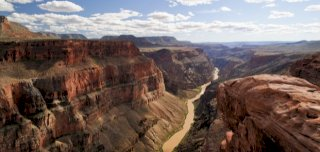

يهتم هذا الفرع بدراسة الجو وعناصره، من حرارة وضغط، ورياح، ويرتبط بهذا الفرع علم الأرصاد الجوية، هذا ولقد درسه اليونان، واهتم به علماء المناخ لا سيما بقضايا الاحتباس الحراري والغازات الدفيئة، فضلا عن ذلك يبحث علماء المناخ في الهواء والغلاف الجوي، وعلاقته بالنشاط البشري، وفيم يلي فروع هذه العلم:
علم المناخ التطبيقي: يهتم بدراسة المناخ لحل مشكلات الاحتباس العالمي والتغير المناخي، وأثر المناخ على الكائنات الحية، وتقلبه كالفيضانات، والجفاف
علم المناخ الفيزيائي: يهتم بدراسة العوامل المؤثرة بالحرارة والهطول، والضباب، ودراسة الاختلافات الإقليمية
علم المناخ الإقليمي: يدرس عوامل المناخ وتوزيعها وأنماطها وخصائصها
تدرس الجغرافيا الحيوية توزيع النباتات والحيوانات، وتطورها، وأنماطها، ولقد برز هذا النوع من الجغرافيا في القرن العشرين، إذ يدرس أيضًا عوامل طبيعية والتكيف والأصناف للبيئة الحيوية، ولقد بدأ الاهتمام بهذا الفرع في أواخر القرن 19، على يد ألفريد راسل والاس، وهو عالم طبيعة إنجليزي، الذي درس نطاق نهر الأمازون وما يحيطه من كائنات، وفيما بعد وضع روبرت ماك نظرية الجغرافيا الحيوية، وتكمن أهمية هذا الفرع في مساعدته بوضع خطة لدمج الأنواع الحية في محميات، وحماية الطبيعة
تدرس مظاهر سطح الأرض، من جبال وسهول وأودية، وطبيعة تكوينها، ولقد ظهرت في العصور القديمة، وفيما بعد اهتم بها الجغرافي الأمريكي ويليام موريس عام 1885م، ولقد ابتكرت نظرية تطور شكل الأرض، من ثم تطورت وباتت تقسم العمليات الجيومورفولوجية إلى عمليات تعرية، وترسيب، كما ودُرِست التجوية، وأثر الكتل الجليدية في هذه العوامل
تعنى بدراسة علم المياه، على حالتيه السائلة والصلبة في الكرة الأرضية، ودورة المياه، وتوزيعها، وأثر الحرارة في تفاعل الماء مع البيئة، من عمليات تبخر وتكثيف، وتساقط، فضلًا عن استخدامات المياه في الشرب والزراعة والصناعة وأثرها على الموارد المائية، ولقد أُجريت عدة دراسات حول هذا الموضوع بالتحديد، وفيما يلي أهم التخصصات التي تدرس هذا الفرع
بكالوريوس علوم وإدارة موارد المياه، يدرس خلالها الطالب عدة مواد كمقدمة في الكيمياء والبيئة، والملوثة البيئية، والهيدرولوجيا البيئية والساحلية
بكالوريوس العلوم يدرس الرياضيات والعلوم الطبيعية، ويركز على الهيدرولوجيا والجيولوجيا
بكالوريوس إدارة البحيرات والخزانات
بكالوريوس اقتصاد البيئة والموارد المائية
بكالوريوس الهيدرولوجيا وعلوم الغلاف الجوي
يدرس هذا الفرع من الجغرافيا الطبيعية توزيع البحار والمحيطات على سطح الأرض، وعلاقتها ببعضها، كما ويبحث في نشأتها، وخصائص المياه فيها، ولقد جاء مصطلح جغرافيا المحيطات من الكلمة اليونانية
أي البحار، لتصف الأرض، وتدرس المياه والأمواج وظاهرتي المد والجزر، لا سيما أن المياه تشكل 71% من مساحة الكرة الأرضية
الجغرافيا الطبيعية أو الفيزيوجغرافيا هو العلم الذي يدرس الظواهر الطبيعية على سطح الأرض من حيث توزيع اليابس والماء والتضاريس وأشكال السطح والغلاف الجوي والغلاف
الجغرافيا مهمة في حياتنا
الجغرافيا مهمة في حياتنا
الجغرافيا مهمة في حياتنا